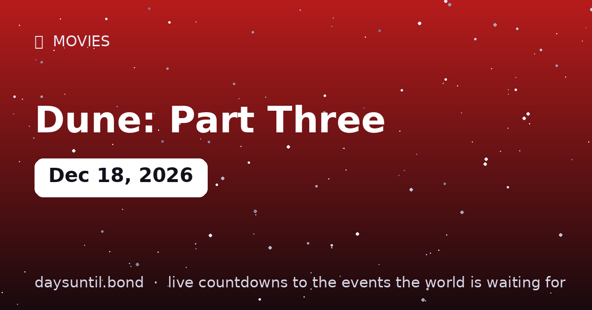

How Many Days Until Dune: Part Three?
Dune: Part Three falls on Friday, December 18, 2026.
As of October 22, 2026: 57 days to go — 8 weeks and 1 days, 41 weekdays (16 weekend days), about 1,368 hours.

Quick facts
| Date | Friday, December 18, 2026 |
|---|---|
| Days away | Live counter above |
About Dune: Part Three
Denis Villeneuve's adaptation of Dune Messiah concludes the trilogy, in theaters and IMAX Friday, December 18, 2026 — with a three-week IMAX exclusivity window over Avengers: Doomsday.
Same day as Avengers: Doomsday. One weekend, two event films, one very full cinema. The live counter above runs to the release/event date worldwide (local time zones may shift availability by hours).
Dune: Part Three opens head-to-head with Avengers: Doomsday on the same day — the showdown fans already call 'Dunesday'. Two premieres, one counter: which side of December 18 are you on?
What Dune: Part Three adapts
The third film adapts Dune Messiah, Frank Herbert's 1969 sequel — the shortest and strangest of the novels he wrote himself. It opens twelve years after the events of the second film, with Paul Atreides ruling as Emperor and the holy war launched in his name having killed tens of billions across the universe. It is a deliberate inversion: where the first two books build a messiah, the second takes one apart.
That structure is why Denis Villeneuve has described the three films as a single arc rather than an open-ended franchise. The books that follow Messiah — Children of Dune, God Emperor of Dune — are a separate proposition, and nothing has been announced beyond this film.
Why the IMAX window matters
Dune: Part Three holds a three-week IMAX exclusivity window over Avengers: Doomsday, which shares the December 18, 2026 release date. In practice that means IMAX screens in most markets will be showing Arrakis through the opening fortnight, and the Avengers opening will play on standard and premium-large-format screens.
It matters more for this film than for most. Villeneuve has been the most consistent advocate for large-format exhibition in mainstream cinema — Dune and Dune: Part Two were shot for IMAX, with aspect ratios that open up on IMAX screens — and the previous film's IMAX run sold out well ahead of general release.
A head-to-head release, and why both survive it
Two event films on one Friday would have been avoided a decade ago. The reason it works now is that the screens and the audiences genuinely differ: the IMAX exclusivity splits the exhibition, and the two films draw on different enough audiences that the weekend is additive rather than cannibalistic.
For the viewer, the practical consequence is that you do not have to choose which weekend to go. Both open on December 18, and the only real decision is format: IMAX now for Dune, or wait three weeks for Avengers on the same screens.
The wider December 2026 window
| Date | Day | Release | Note |
|---|---|---|---|
| Nov 19, 2026 | Thursday | Grand Theft Auto VI | The attention competitor three weeks out |
| Dec 18, 2026 | Friday | Dune: Part Three | IMAX exclusivity for three weeks |
| Dec 18, 2026 | Friday | Avengers: Doomsday | 165 minutes, Russo brothers |
| Dec 25, 2026 | Friday | Christmas Day | Traditionally the year's biggest box-office day |
Villeneuve's Dune so far
Dune arrived in October 2021 after a year's pandemic delay and grossed roughly $400 million worldwide against a $165 million budget, while winning six Academy Awards — all of them technical, for cinematography, editing, sound, score, production design and visual effects. Dune: Part Two followed in March 2024, was better reviewed, and roughly doubled the first film's gross at around $700 million worldwide.
The trajectory matters here: the second film was more commercially confident precisely because it was less expository, and Villeneuve has said throughout that the first instalment was the price of admission for the rest. A trilogy that ends with the strangest of the three novels is a bet that the audience built by the first two will follow.
Why these films are made for IMAX
Both previous films were shot for large format, with aspect ratios that open up on IMAX screens — sequences expand vertically from a letterboxed frame to fill more of the screen. It is not a marketing flourish: Villeneuve composes for the taller frame, and the digital IMAX and 70mm presentations genuinely show more image than the standard release.
The practical consequence is the one that matters to a viewer deciding where to book. On a standard screen, the film is still the film — but sequences built around scale, desert vistas and the sandworms lose the vertical composition they were framed for. With a three-week IMAX window on this release, the IMAX booking is the one to make early.
Why Dune Messiah is the hard one
Herbert wrote Messiah as a correction. He had watched readers of the first novel treat Paul Atreides as a hero and had spent the sequel dismantling that reading — depicting the jihad waged in his name as a catastrophe, and the prescience that made him a messiah as a trap. It is shorter than Dune, more dialogue-driven, and deliberately anti-cinematic in places: much of it is court intrigue and interior argument rather than desert spectacle.
That is the adaptation problem, and it is why the film has been anticipated with more curiosity than simple excitement. A faithful Messiah cannot be a victory lap, and Villeneuve's record suggests he knows it.
Who is expected to return
The principal cast of the first two films is expected back: Timothée Chalamet as Paul Atreides, Zendaya as Chani, Rebecca Ferguson as Lady Jessica, and Florence Pugh as Princess Irulan, with Jason Momoa having played Duncan Idaho — a role that matters more in Messiah than it did in the earlier novels, and one he has publicly described as his favourite.
Messiah also introduces characters the films have not yet cast, including the face dancer Scytale and the Bene Gesserit plot at its centre. Because production has been unusually closed, treat any specific casting beyond the returning leads as unconfirmed until the studio announces it.
Does it end the story?
For this trilogy, yes. Villeneuve has been consistent that the three films cover Dune and Dune Messiah and that Messiah is where he stops — which is an unusual decision in a franchise era, and one that shapes how the film should be read. Rather than setting up the next instalment, it is built as a conclusion.
Herbert's later novels — Children of Dune, God Emperor of Dune and beyond — remain unadapted by this team, and nothing has been announced. That makes this the last Villeneuve Arrakis for the foreseeable future, which is worth knowing before you buy a ticket.